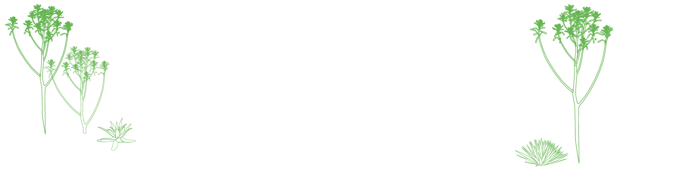

O QUE FAZ O CEFOR?
CAPACITAÇÃO 01
As ações de capacitação dos servidores acontecem por meio de cursos presenciais ou a distância, palestras e seminários ou, ainda, por meio da prospecção de oportunidades de formação e treinamento oferecidas por outras instituições, desde que se adequem às demandas da Câmara dos Deputados no que diz respeito às competências técnicas que precisam ser desenvolvidas. Ao longo desses 25 anos, o CEFOR já contabiliza mais de 3.500 cursos oferecidos, distribuídos em mais de 8.300 turmas, superando os 180 mil alunos capacitados.
PESQUISA 02
O Programa de Pós-Graduação, que abriga um Mestrado Profissional em Poder Legislativo que funciona como instrumento para disseminar conhecimentos legislativos e institucionais por meio da produção técnico-acadêmica, da edição e da manutenção de periódicos especializados, e da realização de ações educacionais, seminários, ciclos de estudo, conferências e iniciativas congêneres. Fundado em 2005, o Programa já formou 118 Mestres em Poder Legislativo. Sua revista digital de divulgação científica E-Legis já contabiliza 43 edições, com 398 artigos publicados.
EDUCAÇÃO PARA
A DEMOCRACIA 03
As atividades de educação para democracia - desenvolvidas diretamente ou em parceria - tem por objetivo fortalecer o Poder Legislativo, bem como o exercício da cidadania democrática. Nessa perspectiva são promovidos programas institucionais voltados para estudantes, educadores e sociedade civil organizada, a exemplo do Parlamento Jovem Brasileiro, do Estágio Visita, do Missão Pedagógica no Parlamento, do Câmara Mirim e da Oficina de Atuação no Parlamento, entre outros.

BREVE HISTÓRICO
Foi em 1997 que se instituiu o Centro de Formação, Treinamento e Aperfeiçoamento dos Servidores da Câmara dos Deputados, com a finalidade de “planejar, promover, executar e avaliar programas e atividades de recrutamento, seleção, atualização, aperfeiçoamento, especialização e desenvolvimento de recursos humanos”. A nova área representava o crescimento da antiga Coordenação de Seleção e Treinamento (CST), subordinada à Diretoria-Geral, que desde 1971 acompanhava a realização de concursos públicos para prover os quadros para a Câmara dos Deputados na nova Capital Federal e em 1985 recebeu a incumbência de realizar as atividades de treinamento.
Inicialmente funcionando no Anexo I do Palácio do Congresso Nacional, em 2007 o Cefor ganhou novas instalações físicas no Complexo Avançado da Câmara dos Deputados, com espaço próprio para receber educandos, educadores, servidores e demais cidadãos.
Nos anos seguintes, com o incremento no número de servidores, o surgimento de novos recursos tecnológicos e também pela evolução do serviço público orientada pela reforma administrativa do período de 1994 a 2003, a capacitação de pessoas tornou-se premente, orientada também pelas novas exigências das funções legislativas, como a regulamentação dos dispositivos constitucionais e o incremento da atuação das comissões de inquérito.
Ao longo desses 25 anos, a vocação do Cefor tem sido, desenvolver competências técnicas e gerenciais dos servidores, de forma alinhada às missões constitucionais da Câmara dos Deputados - representar, legislar e fiscalizar - e às diretrizes do seu planejamento estratégico, na qualidade de Escola de Governo, nos termos do art. 39, § 2°, da Constituição Federal.
LINHA DO TEMPO
CEFOR EM NÚMEROS
DEPOIMENTOS
VÍDEOS
CALENDÁRIO
DE
ATIVIDADES
COMEMORATIVAS
2022
OUTUBRO
Lançamento Painel Comemorativo CEFOR 25 ANOS
Área interna do Cefor
Palestra comemorativa CEFOR 25 anos - O projeto arquitetônico do prédio do CEFOR, com Maurício Matta
às 15h, no Auditório do CEFOR
NOVEMBRO
Apresentação do Coral da Câmara - CEFOR 25 anos
Foyer CEFOR
CONHEÇA NOSSAS
REDES SOCIAIS
 @escoladacamara
@escoladacamara @escoladacamara
@escoladacamara @escoladacamaradeputados
@escoladacamaradeputadosCentro de Formação, Treinamento e Aperfeiçoamento (CEFOR) - 2022
Endereço
Via N3, Projeção L, Setor de Garagens Ministeriais Norte, Complexo Avançado da Câmara dos Deputados, Bloco B,
Sala 19 Brasília-DF
- CEP 70160-900